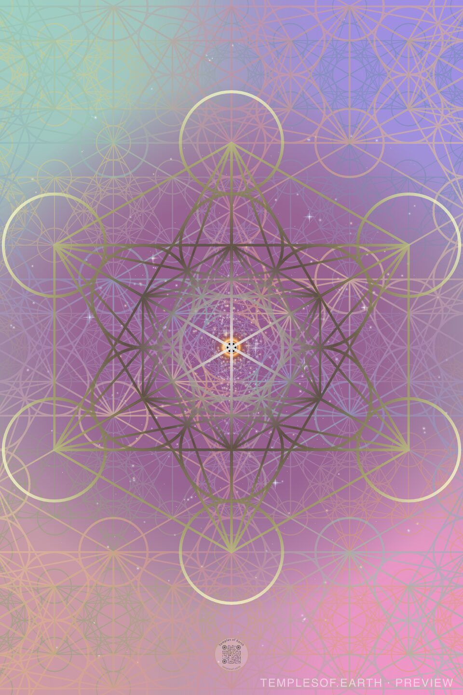
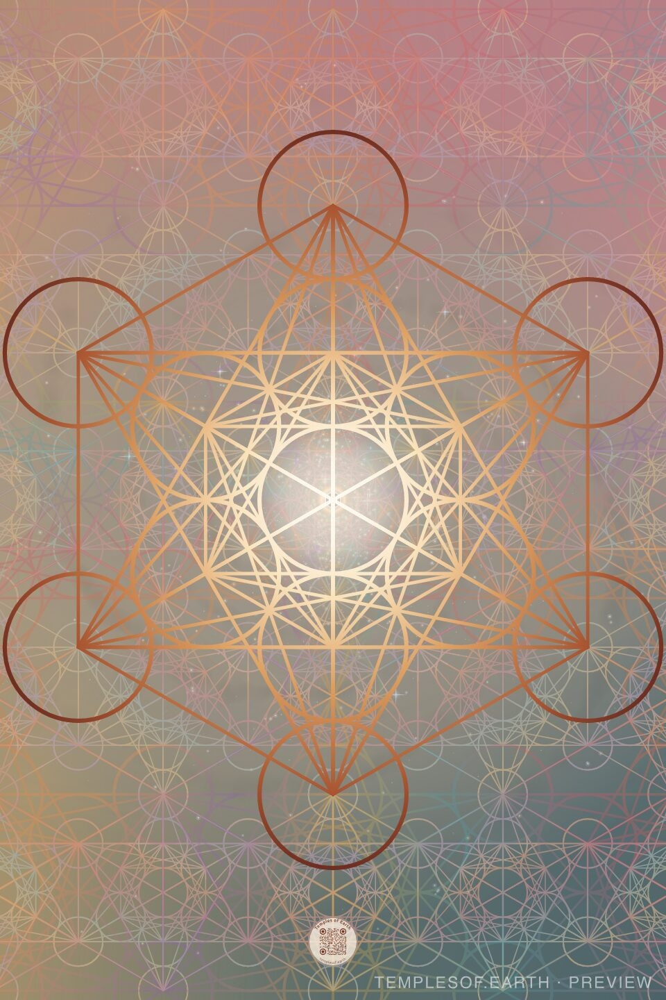
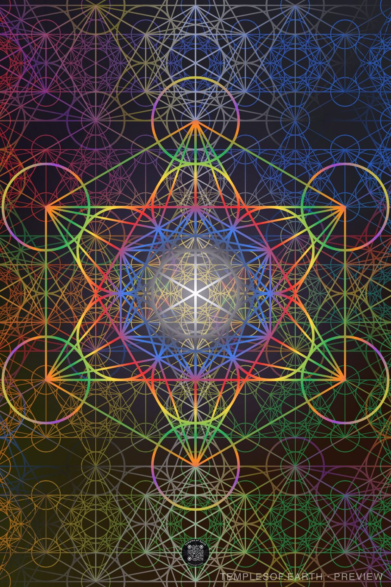

Metatron's Slice
Metatron's Cube is eternity's map. This print is a slice through it at the golden angle, the way time lives it: a light that rhymes everywhere and never repeats.
The First Physical Offering
A portable temple.
An oversized coconut-rubber mat, its printed surface patterned with fractal sacred geometry — carry it anywhere and create a sacred place wherever you unroll it.
Nine new designs · help us choose the one we print



What It Is
A print made to support deep inner journeying — a still point you can carry into any room, landscape, or gathering.
Nine Prints
The same living geometry, rendered in nine palettes. We will print the one you choose. Tap the ✓ on your three favorites, in order.
Metatron's Cube is eternity's map. This print is a slice through it at the golden angle, the way time lives it: a light that rhymes everywhere and never repeats.
The Greeks called the universe kosmos, a word that means both order and adornment. The geometry rests in a soft nebula: order and beauty as one thing.
Okeanos was the great river circling the world, which Homer calls the source of all waters and of the gods. The pattern rests on deep water, the stillness everything rises from.
The chacruna leaf brings the light to the ayahuasca brew; its Quechua name comes from a word meaning to mix. The plant teacher's green, lit from within.
From the old French for wandering: the waking dream in which the mind lets go and images arise on their own. Violet lines drifting through a dusk haze.
Named for the small printed squares that carried the visionary sacrament of the sixties and opened, in Blake's phrase, the doors of perception. The whole spectrum at once.
The axis of the world in nearly every tradition, from the ten spheres of the Kabbalah to Yggdrasil, joining roots, earth and heaven. The spectrum climbs to a white crown.
The threshold hour. In many traditions the sacred day begins at sundown, as the sun descends to make its night journey. Copper lines around a glowing white sun.
The antlered Celtic lord of the wild. On the Gundestrup cauldron he sits cross-legged among the animals, as you will at the center of this mat.
Help Choose the Print
Pre-orders are paused while we choose. Three taps and your first name: that's the whole vote.
Your vote is in.
Points: 3 for a first choice, 2 for a second, 1 for a third.
The Pattern
According to esoteric traditions, the archangel Metatron acts as celestial scribe of creation.
The pattern itself is old. Overlapping-circle hexagonal motifs appear in Assyrian thresholds, Roman mosaics, and Islamic art, and were incised on granite at the Osirion temple in Abydos, Egypt. Leonardo da Vinci doodled extensively with the pattern in the Codex Atlanticus.
How to Use It
Suitable for movement or stillness — alone, in pairs, or as a family.

Solo practice can be amplified by sitting at the center and entering a period of spiritual practice — meditation, breath, prayer, or simple presence at the heart of the pattern.
Partner practice can be energized by creating a central altar with special objects and sitting apart from each other — at opposite corners, back-to-back, or facing forward side-by-side.
Family practice is enhanced by the pattern's activation nodes — distinct points around the geometry where each person can take their place.
Up to 6 activation nodesA Place to Connect
A place for you to connect.
To yourself.
To the Universe.
To your friend or partner.
To your family.
A portable portal.